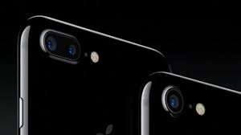

Новый Iphone7
 Двойная камера 12 Мп: с широкоугольным и телеобъективом. Широкоугольный объектив: диафрагма ƒ/1.8 Телеобъектив: диафрагма ƒ/2.8 Двукратный оптический зум; 10-кратный цифровой зум.Двойная камера в Plus-версии позволяет делать 2-х кратное оптическое приближение, а также создавать более красивое размытие заднего плана на фотографии. Кроме того, оба модуля оснащены трёхосевой стабилизацией. Автономность стала больше и у обычной, и у Plus-модели, но главное – сохранили рычажок переключения в беззвучный режим! Разработчики получили доступ к Taptic Angine API. В обычном iPhone 7 камера на 12-мегапикселей с оптической стабилизацией, f/1.8 и шестью линзами! Возможность снимать в RAW имеется. Камера FaceTime теперь на 7 мегапикселей. В Plus-версии обе камеры на 12-мегапикселей. Причем вторая отвечает за приближение: 2х оптический зум и 10х цифровой. Фотографии можно делать с размытым задним фоном, причем эффект можно видеть во время самой съемки. Но это софтверная штука. В седьмом айфоне камера стала, значительно, лучше. Разрешение камеры осталось 12 мегапикселей, как и у iPhone 6S. Камера получила ту же технологию видео съемки Quad Full HD, что и в iPhone 6S и улучшенную съемку при плохом освещении с апертурой f/1.8. На 50% больше света воспринимается камерой в темной среде съемки. Фишка технологии Quad Full HD заключается в том, что iPhone 7 сможет снимать видео с разрешением 4К. Вы сможете снимать видео с разрешением 3840×2160px и частотой 60 кадров в секунду. А еще камера получила оптическую стабилизацию при съемке видео и это здорово, т.к. во время съемки – видео будет меньше дергаться. Сенсор на 60% быстрей и на 30% энергоэффективней. Фотографировать можно будет быстрей, но при этом батарея при съемке не будет сильно быстро тратится. Новый сенсор использует «машинное обучение», чтобы улучшать качество фото. Так же, камера получила шесть линз (в предыдущих айфонах с 4S-6S использовалось пять), что способствует более лучшему оптическому эффекту и большему качеству изображения.
https://www.apple.com/ru/iphone-7/